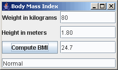

Java Notes
Programming: Body Mass Index - GUI
Name ________________________________________
Description
|
Write a program that computes the user's Body Mass Index (BMI). BMI is a commonly used formula which shows the relationship of your weight for your height. It is calculated as weight in kilograms divided by the square of height in meters. |
 |
Specifics
- The height and weight should be doubles.
- Use try..catch to give an error message if the input values are not legal doubles.
- Check that input values are in a legal range (eg. greater than zero).
- Write a method that calculates the BMI using the formula bmi = weight / (height * height). The listener should call this method.
- Display the BMI number along with a message about the weight. These are
the National Institute of Health official categories, but you may create your own messages.
- Underweight for BMI < 18.5
- Normal for BMI from 18.5 up to 25
- Overweight for BMI from 25 to 30
- Obese for BMI over 30
Optional - English Units
You can use English units if you make the proper conversions. For example, 1 inch = 2.54 centimeters and one pound is 0.454 kilograms.